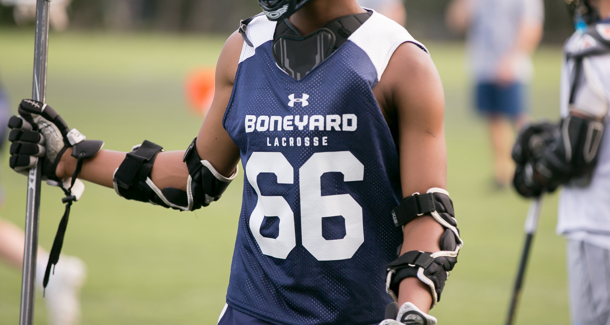

Boneyard Lacrosse
Identity Design
Brand identity, product design, art direction for Boneyard Lacrosse, a youth lacrosse club based in New Haven, CT. The program, which has roughly 200 participants between grades 6 and 11, wanted a visual identity that acknowledged and honored their affiliation with Yale University, while signaling something new, younger and contemporary. The icon and wordmark were designed as an original but still recognizable take on Yale’s iconic bulldog mascot and color system.


